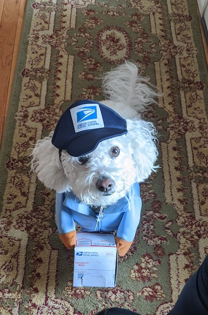

Augusta Ada King, Countess of Lovelace (née Byron; 10 December 1815 – 27 November 1852) was an English mathematician and writer, chiefly known for her work on Charles Babbage's proposed mechanical general-purpose computer, the Analytical Engine. She was the first to recognize that the machine had applications beyond pure calculation, and published the first algorithm intended to be carried out by such a machine. As a result, she is widely regarded as the first to recognize the full potential of computers and one of the first computer programmers.
Augusta Byron was the only legitimate child of poet Lord Byron and his wife Lady Byron. All of Byron's other children were born out of wedlock to other women. Byron separated from his wife a month after Ada was born and left England forever four months later. He commemorated the parting in a poem that begins, "Is thy face like thy mother's my fair child! ADA! sole daughter of my house and heart?". He died of disease in the Greek War of Independence when Ada was eight years old. Her mother remained bitter and promoted Ada's interest in mathematics and logic in an effort to prevent her from developing her father's perceived insanity. Despite this, Ada remained interested in Byron, naming her two sons Byron and Gordon. Upon her eventual death, she was buried next to him at her request. Although often ill in her childhood, Ada pursued her studies assiduously. She married William King in 1835. King was made Earl of Lovelace in 1838, Ada thereby becoming Countess of Lovelace.
Her educational and social exploits brought her into contact with scientists such as Andrew Crosse, Charles Babbage, Sir David Brewster, Charles Wheatstone, Michael Faraday and the author Charles Dickens, contacts which she used to further her education. Ada described her approach as "poetical science" and herself as an "Analyst (& Metaphysician)".
When she was a teenager, her mathematical talents led her to a long working relationship and friendship with fellow British mathematician Charles Babbage, who is known as "the father of computers". She was in particular interested in Babbage's work on the Analytical Engine. Lovelace first met him in June 1833, through their mutual friend, and her private tutor, Mary Somerville.
Between 1842 and 1843, Ada translated an article by Italian military engineer Luigi Menabrea on the calculating engine, supplementing it with an elaborate set of notes, simply called Notes. These notes contain what many consider to be the first computer program—that is, an algorithm designed to be carried out by a machine. Other historians reject this perspective and point out that Babbage's personal notes from the years 1836/1837 contain the first programs for the engine. Lovelace's notes are important in the early history of computers. She also developed a vision of the capability of computers to go beyond mere calculating or number-crunching, while many others, including Babbage himself, focused only on those capabilities. Her mindset of "poetical science" led her to ask questions about the Analytical Engine (as shown in her notes) examining how individuals and society relate to technology as a collaborative tool.
Here's a picture of my dog wearing a US Postal Service costume. Click on the picture to go to the website where I bought the costume:

Listen to a sound below: